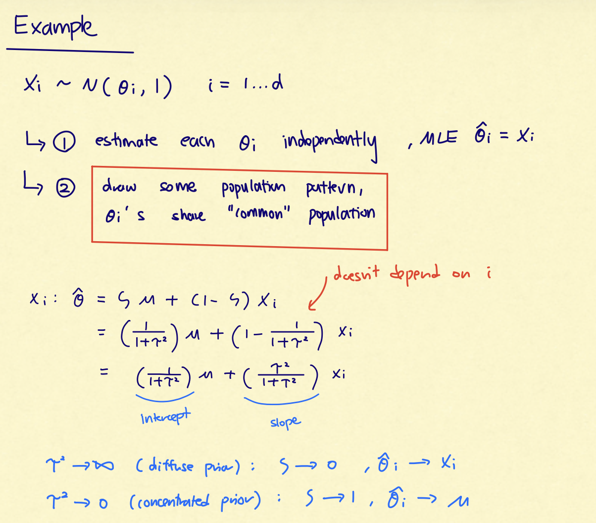
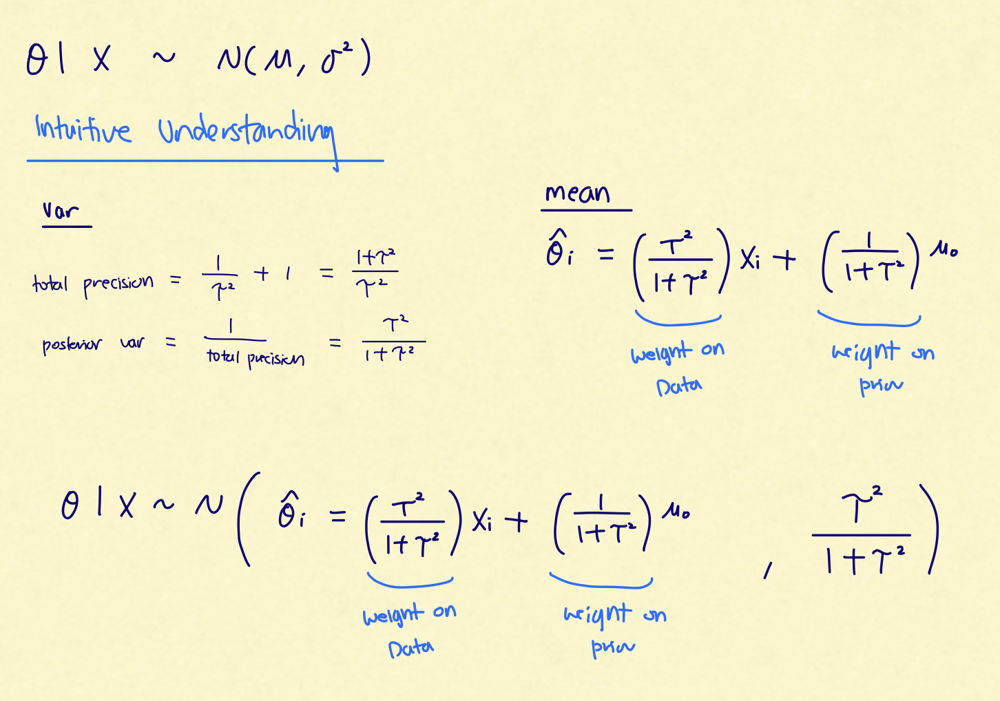
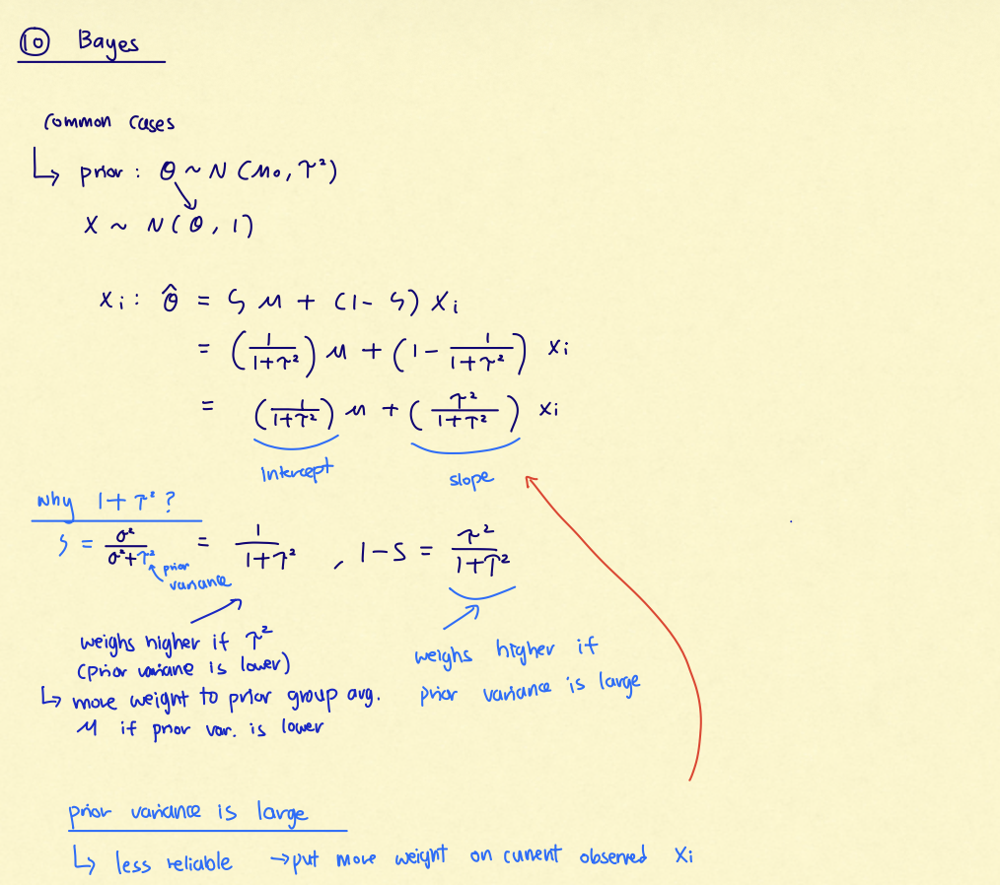
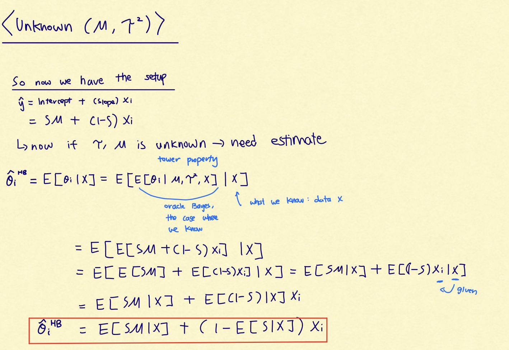
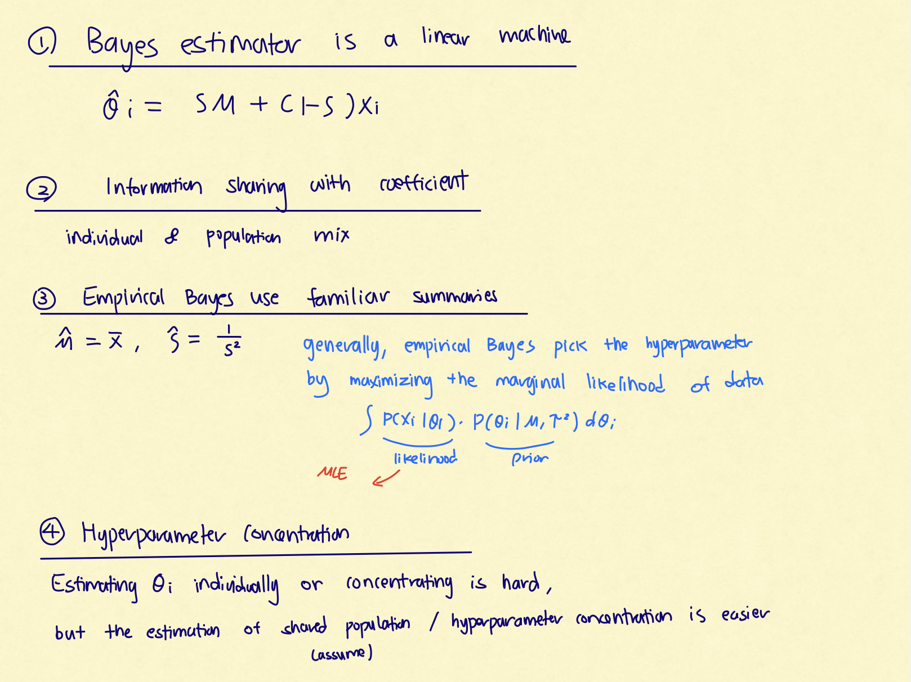

Lectures 25 and 26 fit together as a single story. Lecture 25 asks: if the posterior distribution is complicated, how can we still estimate
posterior expectations? Lecture 26 asks: if we have many related parameters, how can data from all of them improve each individual estimate?
The bridge is hierarchical Bayes. A hierarchical posterior is often high-dimensional and hard to integrate directly, so Gibbs sampling is a
practical way to simulate from it. Once we have simulated from the posterior, we can estimate posterior means and understand shrinkage.
$$\text{Bayes estimator}=\text{posterior expectation}\quad\Longrightarrow\quad \text{if the integral is hard, simulate from the posterior.}$$
The mental path is:
posterior meanMCMCGibbs full conditionalshierarchical modelshrinkagehyperparameter concentration
The payoff is that MCMC gives a computational tool, while hierarchical Bayes gives a statistical reason for pooling information across related
problems.
The central Lecture 26 insight is: with many parallel problems, the population-level hyperparameters can become sharply learned even when each
individual parameter remains noisy. That is why shrinkage can improve many individual estimates at once.
Review: Bayes Risk, Bayes Estimators, and Posterior Means
2.1 Risk versus Bayes risk
In the frequentist setup, $\theta$ is fixed and the data $X$ are random. If $T(X)$ estimates $\theta$ and $L(\theta,T(X))$ is the loss, then the
risk is
$$R(\theta;T)=\E_\theta[L(\theta,T(X))].$$
In the Bayesian setup, $\theta$ also has a prior distribution $\pi$. The Bayes risk averages over both $\theta$ and $X$:
$$r_\pi(T)=\E[L(\theta,T(X))].$$
The same expectation can be decomposed in two useful ways: $$r_\pi(T)=\E\{R(\theta;T)\}=\E\{\E[L(\theta,T(X))\mid X]\}.$$ The second form says:
after seeing $X$, minimize the expected posterior loss.
2.2 Bayes estimator
The Bayes estimator minimizes the posterior expected loss. Under squared-error loss, the answer is the posterior mean:
If $L(\theta,a)=(\theta-a)^2$, then $$T_{\text{Bayes}}(X)=\E[\theta\mid X].$$
This is why computation matters. If $\E[\theta\mid X]$ is an intractable integral, we need another way to approximate it. Monte Carlo is the
natural idea: simulate posterior draws $\theta^{(1)},\ldots,\theta^{(m)}$ and average them.
Suppose the target distribution $p$ is complicated, high-dimensional, or known only up to a normalizing constant. MCMC builds a Markov chain
whose stationary distribution is $p$. After the chain has mixed, its states behave like dependent draws from $p$.
A Markov chain Monte Carlo method constructs states $X_0,X_1,\ldots$ such that the long-run distribution of $X_t$ is the target distribution
$p$. After burn-in, averages along the chain approximate expectations under $p$.
The code-breaking example from probability is a useful memory hook. The state was a decoder, the state space was enormous, and a Metropolis
chain searched through likely decoders. In general Bayesian computation, we are not just searching for a mode; we want posterior averages.
3.2 Burn-in, mixing, trace plots, and thinning
Term
Meaning
How to remember it
Burn-in
The early part of the chain before it has reached its steady-state behavior.
Throw away the first $B$ draws.
Mixing
How quickly the chain forgets its starting point and explores the target distribution.
Good mixing means the trace wanders around the target region without a long trend.
Trace plot
A plot of $f(X_t)$ against iteration $t$.
Use it to diagnose drift, sticking, or slow movement.
Thinning
Keeping every $k$th draw to reduce autocorrelation or storage.
Useful sometimes, but not automatically better because it discards data.
Trace-plot intuition: before burn-in, the chain can still remember the starting point. After mixing, the trace should fluctuate around a stable
region instead of drifting persistently.
MCMC samples are not independent. The law of large numbers still has Markov-chain versions, but the effective sample size can be much smaller
than the number of iterations when autocorrelation is high.
Gibbs Sampling
4.1 Full conditionals
Gibbs sampling is designed for a multivariate target distribution where sampling jointly is hard, but sampling one coordinate at a time is easy.
For a vector $\mathbf{x}=(x_1,\ldots,x_d)$, write $\mathbf{x}_{-i}$ for all coordinates except $x_i$.
The full conditional for coordinate $i$ is the distribution $$p(x_i\mid \mathbf{x}_{-i}).$$ Gibbs sampling repeatedly samples each coordinate
from its full conditional, holding all other coordinates fixed.
4.2 The complete cycle
Starting at $\mathbf{x}$, one complete Gibbs cycle does:
Draw $x_1^*\sim p(x_1\mid x_2,\ldots,x_d)$.
Draw $x_2^*\sim p(x_2\mid x_1^*,x_3,\ldots,x_d)$.
Continue through coordinate $d$.
The resulting vector is the next Markov-chain state.
The process is Markov because the next complete cycle depends only on the current state, not on the entire past.
4.3 Two-dimensional geometry: horizontal and vertical slices
For two parameters $(\alpha,\beta)$, Gibbs alternates between conditional slices. At current $\beta$, sample a new $\alpha$ from the horizontal
slice. Then at the new $\alpha$, sample a new $\beta$ from the vertical slice.
Gibbs sampling in two dimensions: each move samples one coordinate conditional on the other. One horizontal move plus one vertical move is one
complete cycle.
4.4 Why Gibbs can be slow
If the target has multiple modes, the chain can get stuck near one mode for a long time.
If coordinates are highly correlated, coordinate-by-coordinate moves can take baby steps along a narrow ridge.
If any full conditional is hard to sample from, each Gibbs cycle becomes expensive.
If the initial value is far from the typical posterior region, burn-in can be long.
Gibbs is easy when the conditional slices are easy and the posterior is not too ridge-like. It can be painfully slow when the posterior is
highly correlated because the chain moves axis-aligned, one coordinate at a time.
Why Gibbs Works
The rigorous details are beyond the course, but the core idea is simple: each coordinate update is built from a conditional distribution that is
consistent with the target joint distribution. Therefore, if the current state already has the target distribution, the coordinate-updated state
still has the target distribution.
5.1 One-coordinate update
Fix coordinate $i$. The Gibbs transition changes only $x_i$ and leaves $\mathbf{x}_{-i}$ fixed. Its transition probability/density is
If $\mathbf{x}$ and $\mathbf{x}^*$ differ only in coordinate $i$, then $\mathbf{x}_{-i}=\mathbf{x}^*_{-i}$. Using the factorization
$p(\mathbf{x})=p(\mathbf{x}_{-i})p(x_i\mid\mathbf{x}_{-i})$, the detailed-balance calculation is
$$ \begin{aligned} p(\mathbf{x})P_i(\mathbf{x},\mathbf{x}^*) &=p(\mathbf{x}_{-i})p(x_i\mid \mathbf{x}_{-i})p(x_i^*\mid \mathbf{x}_{-i})\\
&=p(\mathbf{x}_{-i})p(x_i^*\mid \mathbf{x}_{-i})p(x_i\mid \mathbf{x}_{-i})\\ &=p(\mathbf{x}^*)P_i(\mathbf{x}^*,\mathbf{x}). \end{aligned} $$
Thus the target distribution is stationary for this one-coordinate update.
5.2 Complete-cycle chain
A full Gibbs iteration is a composition of these coordinate updates. Since each update preserves the target distribution, the complete cycle
preserves it too. Under suitable irreducibility and aperiodicity conditions, the chain converges to the target distribution.
"Stationary distribution is correct" does not automatically mean "your finite simulation is good." You still need mixing diagnostics, enough
iterations, and awareness of multimodality or high autocorrelation.
5.3 Balance, detailed balance, and fixed-order Gibbs
One subtle lecture point: each one-coordinate Gibbs update satisfies detailed balance with the target distribution, but a full deterministic
cycle through coordinates need not be reversible. That is not a problem for stationarity. The important fact is that each coordinate update
preserves the target distribution, so composing the updates preserves it too.
If the order of coordinate updates is randomly permuted each iteration, the complete cycle can also satisfy detailed balance. With a fixed
order, it is safer to remember the weaker but sufficient statement: the target distribution is stationary for the complete-cycle chain.
Hierarchical Bayes: Many Related Parameters
6.1 The statistical problem
Suppose there are many related problems: many baseball players, many teams, many schools, many genes, or many coordinates. Each unit has its own
parameter $\theta_i$, but the parameters are not completely unrelated. They come from a shared population.
A hierarchical Bayes model gives the individual parameters a common population distribution, usually controlled by hyperparameters. A generic
version is $$\eta\sim \text{hyperprior},\qquad \theta_i\mid \eta\iid G_\eta,\qquad X_i\mid \theta_i\sim P_{\theta_i}.$$
Hierarchical Bayes: the hyperparameter controls the population distribution of all $\theta_i$'s; each observation $X_i$ is generated from its
own $\theta_i$.
6.2 Borrowing strength
The phrase "borrowing strength" means that the estimate of one unit uses information from the others through the shared hyperparameter. Each
unit still has its own data, but the model learns a population pattern from all units together.
Hierarchical Bayes does not literally average everybody together. It learns the population center and spread, then shrinks noisy individual
estimates toward that learned population structure.
Example
Individual parameter
Population/hyperparameter
Borrowing strength means
Baseball Beta-Binomial
Player batting probability $p_i$
Beta$(\alpha,\beta)$
Players with few at-bats get pulled toward the league-level batting distribution.
Premier League Gamma-Poisson
Team scoring rate $\theta_i$
Gamma$(\alpha,\beta)$
Team rates get shrunk toward the population of team scoring rates.
Gaussian many means
Mean $\theta_i$
$N(\mu,\tau^2)$
Each $X_i$ gets shrunk toward the learned center $\mu$.
Gaussian Many-Means Model and Shrinkage
7.1 The model
Lecture 26 studies the cleanest closed-form version of hierarchical Bayes:
If we ignored the relationship among the $\theta_i$'s, the MLE would be $\hat\theta_i=X_i$, with per-coordinate risk 1. The hierarchical model
says the $\theta_i$'s are similar enough that we can improve by shrinking the noisy $X_i$'s toward a common center.

Handwritten checkpoint: estimating each $\theta_i$ independently gives $\hat\theta_i=X_i$, but the hierarchical move assumes the $\theta_i$'s
share a common population pattern. That shared pattern is what creates borrowing strength.
7.2 Oracle Bayes when $\mu$ and $\tau^2$ are known
The weight on a source is larger when that source is more precise. If $\tau^2$ is small, the prior population is tightly concentrated, so the
prior mean $\mu$ gets more weight. If $\tau^2$ is large, the prior population is diffuse, so the current observation $X_i$ gets more weight.

Handwritten checkpoint: the posterior mean is a precision-weighted average of data and prior. In this lecture's normalization, the data
variance is 1, so the weights simplify to $\tau^2/(1+\tau^2)$ on $X_i$ and $1/(1+\tau^2)$ on $\mu$.
Situation
Limit
Estimator behavior
Large population spread
$\tau^2\to\infty$, so $\zeta\to 0$
Little shrinkage: $\hat\theta_i\approx X_i$.
Small population spread
$\tau^2\to 0$, so $\zeta\to 1$
Strong shrinkage: $\hat\theta_i\approx \mu$.

Handwritten checkpoint: $\zeta=1/(1+\tau^2)$ is the weight on the population mean. A smaller prior variance means the common population is
more trusted, so $\mu$ gets more weight; a larger prior variance means the prior is diffuse, so $X_i$ gets more weight.
The MLE uses the identity line $\hat\theta_i=X_i$. Shrinkage uses a flatter line that pulls extreme observations back toward the population
center.
The page's main memory hook: hierarchical and empirical Bayes are not magic. They estimate the intercept and slope of this shrinkage line using
all $d$ observations, then apply the same line to each individual $X_i$.
Unknown Hyperparameters: Hierarchical Bayes vs Empirical Bayes
8.1 The two philosophies
Method
What it does with $(\mu,\tau^2)$
Output
Hierarchical Bayes
Puts a prior on hyperparameters and computes their posterior.
Posterior mean estimator after averaging over hyperparameter uncertainty.
Empirical Bayes
Estimates hyperparameters from the marginal distribution of the data.
Plug-in Bayes estimator using estimated hyperparameters.
8.2 Hierarchical Bayes formula by the tower property
Let $\zeta=1/(1+\tau^2)$. Conditional on $(\mu,\zeta)$, the posterior mean is the oracle shrinkage rule. Now average over the posterior
distribution of $(\mu,\zeta)$:
This is the same linear shrinkage rule, except the intercept $\zeta\mu$ and shrinkage factor $\zeta$ are replaced by posterior means learned
from the full data set.
This is why the lecture describes hierarchical Bayes as a kind of plug-in estimator in disguise. It does not plug in one point estimate of
$(\mu,\zeta)$; instead it plugs in posterior averages of the two coefficients that determine the shrinkage line.

Handwritten checkpoint: when $(\mu,\tau^2)$ are unknown, use the tower property. First pretend the hyperparameters are known and apply the
oracle Bayes formula; then average the resulting intercept and shrinkage factor over their posterior given all of $X$.
8.3 Empirical Bayes from the marginal distribution
Under the Gaussian hierarchy, integrate out $\theta_i$:
Therefore, the center of the observed $X_i$'s estimates $\mu$, and the spread estimates $1+\tau^2$. Since $1+\tau^2=1/\zeta$,
$$\hat\mu=\bar X,\qquad \hat\zeta=\frac{1}{S^2},\qquad S^2=\frac{1}{d-1}\sum_{i=1}^d(X_i-\bar X)^2.$$ If $S^2<1$, use $\hat\zeta=1$ as a clipped
full-shrinkage version.
The Gaussian case makes empirical Bayes look almost too easy because the marginal mean and variance identify the hyperparameters. In more
general hierarchical models, the same idea becomes: integrate out the individual $\theta_i$'s, maximize the marginal likelihood over the
hyperparameters, then plug those hyperparameter estimates into the Bayes update for each unit.
Handwritten checkpoint: empirical Bayes estimates the same two coefficients using familiar summaries. In the Gaussian case,
$\hat\mu\approx\bar X$ and $\hat\zeta\approx 1/S^2$. A larger sample variance means the observed cloud is more spread out, so there is less
shrinkage toward the common mean.
Estimator
Intercept
Slope
MLE
$0$
$1$
Oracle Bayes
$\zeta\mu$
$1-\zeta$
Hierarchical Bayes
$\E[\zeta\mu\mid X]$
$1-\E[\zeta\mid X]$
Empirical Bayes
$\hat\zeta\hat\mu=\bar X/S^2$
$1-\hat\zeta=1-1/S^2$
Each individual estimate still uses its own $X_i$. The sharing happens through the common coefficients, which are estimated from all $d$
observations.
Hyperparameter Concentration
9.1 Why many parallel problems help
One observation $X_i$ contains limited information about its own $\theta_i$. But the whole collection $X_1,\ldots,X_d$ contains many draws from
the marginal population distribution $N(\mu,1+\tau^2)$. That makes $\mu$ and $\tau^2$ learnable.
With many parallel problems, hyperparameters can become sharply estimated even while individual parameters remain uncertain.
The lecture visualizes this by increasing the number of parallel Gaussian problems. For small $d$, the posterior over $\mu$ and $\tau^2$ is
broad. For large $d$, the same posterior becomes tight around the population values, because the cloud of $X_i$'s reveals the population center
and spread.
This explains the risk behavior from the lecture simulation:
Estimator
What happens as $d$ grows?
MLE $\hat\theta_i=X_i$
Per-coordinate risk stays at 1 because each coordinate is treated alone.
Oracle Bayes
Uses the true $\mu,\tau^2$ and has per-coordinate risk $\tau^2/(1+\tau^2)$.
Empirical Bayes
Approaches oracle because $\bar X$ and $S^2$ learn the hyperparameters.
Hierarchical Bayes
Approaches oracle because the posterior on the hyperparameters concentrates.
9.2 Posterior concentration under a flat hyperprior
After integrating out the latent $\theta_i$'s, the Gaussian hierarchy becomes ordinary inference from $X_i\iid N(\mu,1+\tau^2)$. With a flat
prior on $(\mu,\tau^2)$, the posterior summaries are the familiar normal-sample forms:
As $d$ grows, these distributions tighten. In the lecture's simulated example with $d=200$, the posterior for the hyperparameters is much more
concentrated than it is for small $d$.
The individual parameters $\theta_i$ each have only one noisy observation. The hyperparameters have the entire cloud of $d$ observations. That
is why the population can be known better than any one individual.
Gamma-Poisson Example and Gibbs Traces
10.1 The Premier League hierarchy
The lecture returns to the Gamma-Poisson Premier League model from the worksheet. For team $i$ and match $j$,
Here $\theta_i$ is a team scoring rate, $\alpha$ is held fixed, and $\beta$ is a hyperparameter that controls the population of scoring rates.
If $G_i=\sum_j X_{ij}$ is total goals for team $i$ over $m$ matches, conjugacy gives the Gibbs updates:
This is exactly where Lecture 25 and Lecture 26 meet. The model is hierarchical, and Gibbs sampling alternates between updating team-level rates
$\theta_i$ and the population-level hyperparameter $\beta$.
10.2 Marginal model check before Gibbs
Before running Gibbs, the lecture checks whether the hierarchy is a plausible model for the observed team totals. If
$\theta_i\sim\text{Gamma}(\alpha,\beta)$ and $G_i\mid\theta_i\sim\text{Pois}(m\theta_i)$, then integrating out $\theta_i$ gives a
negative-binomial marginal distribution:
This is the empirical-Bayes instinct again: the marginal distribution across teams tells us about the population hyperparameter. If the fitted
marginal distribution is wildly inconsistent with the observed totals, then the hierarchy itself is suspect before we even worry about Gibbs.
10.3 Trace-plot interpretation
The lecture's trace-plot message: the population-level hyperparameter can have a narrow posterior band while individual rates still wander over
wider ranges.
We do not know each team rate precisely after only 10 matches. But the population distribution of team rates can be learned much more reliably
from all 20 teams. That reliable population estimate is what makes shrinkage useful.
Formula Sheet and Recall Map
11.1 Main formulas
Concept
Formula
Meaning
Bayes risk
$r_\pi(T)=\E[L(\theta,T(X))]$
Risk averaged over the prior and sampling distribution.
Squared-loss Bayes estimator
$T(X)=\E[\theta\mid X]$
Posterior mean minimizes posterior expected squared loss.
MCMC estimate
$m^{-1}\sum_{t=B+1}^{B+m}f(X_t)$
Average post-burn-in chain values.
Gibbs full conditional
$p(x_i\mid \mathbf{x}_{-i})$
Update one coordinate holding all others fixed.
Gaussian oracle shrinkage
$\hat\theta_i=\zeta\mu+(1-\zeta)X_i$
Convex combination of population mean and data.
Shrinkage factor
$\zeta=1/(1+\tau^2)$
More population spread means less shrinkage.
Hierarchical Bayes shrinkage
$\E[\zeta\mu\mid X]+(1-\E[\zeta\mid X])X_i$
Posterior-mean intercept and slope.
Empirical Bayes shrinkage
$\bar X+(1-\hat\zeta)(X_i-\bar X)$
Plug-in shrinkage using marginal estimates.
Gaussian EB hyperparameter estimates
$\hat\mu=\bar X,\ \hat\zeta=1/S^2$
Mean and spread of observed $X_i$'s identify the population.
General EB principle
Estimate hyperparameters from the marginal distribution of the data.
Integrate out individual parameters, fit the population model, then plug in.
Conjugate Gibbs update for population rate parameter.
11.2 Recall map
$$\text{posterior mean hard to compute}\Rightarrow \text{MCMC}\Rightarrow \text{Gibbs when full conditionals are easy}.$$ $$\text{many related
parameters}\Rightarrow \text{hierarchical model}\Rightarrow \text{learn population}\Rightarrow \text{shrink individuals}.$$
The conceptual one-liner for these two lectures is: Gibbs sampling is a way to compute posterior averages, and hierarchical Bayes is a reason
those posterior averages can improve many related estimates by learning a shared population.

Handwritten final map: all versions of the estimator use the same shrinkage form. The difference is whether the shrinkage coefficients are
known, averaged over a posterior, or estimated from the marginal distribution.
Common Mistakes
1. Confusing the posterior mode with the posterior mean.
The code-breaking MCMC example often looked for a high-scoring decoder, but Bayes estimators under squared loss require posterior means.
2. Forgetting burn-in.
Early chain states can still reflect the arbitrary starting point. Posterior averages should use draws after the chain has mixed.
3. Thinking thinning automatically improves inference.
Thinning can reduce autocorrelation or storage, but it also discards samples. It is not a universal fix.
4. Thinking Gibbs always mixes quickly.
Gibbs can be slow for multimodal targets or highly correlated coordinates, because it moves one coordinate at a time.
5. Forgetting that full conditionals must be compatible with one target joint distribution.
Gibbs works because the full conditionals come from the target distribution you want.
6. Confusing hierarchical Bayes with simply pooling all data into one mean.
Hierarchical Bayes learns a population distribution and partially pools. It does not force all $\theta_i$'s to be identical.
7. Thinking empirical Bayes is fully Bayesian.
Empirical Bayes plugs in hyperparameter estimates. Hierarchical Bayes averages over hyperparameter uncertainty.
8. Reversing the shrinkage factor interpretation.
$\zeta=1/(1+\tau^2)$ is the weight on the population mean. Larger $\tau^2$ means less shrinkage, not more.
9. Missing where information is shared.
In the Gaussian model, each estimate is a function of its own $X_i$, but the line's slope and intercept are learned from all observations.
10. Thinking individual uncertainty must vanish because hyperparameter uncertainty vanishes.
With one observation per unit, each $\theta_i$ can remain uncertain even when $\mu$ and $\tau^2$ are sharply learned from many units.
Data 145 Study Guide - Lectures 25-26 - Standalone Review Version